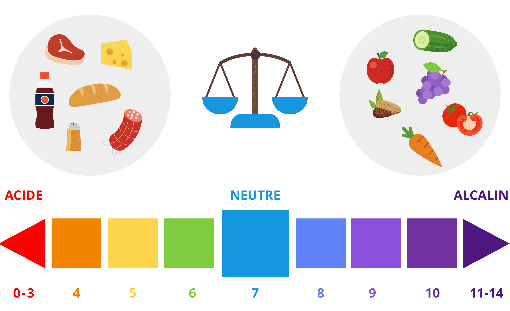

L’équilibre acido-basique consiste à équilibrer le pH de notre corps. Cet équilibre est indispensable pour optimiser sa santé. Voici notre décryptage fait avec l’aide du nutritionniste Anthony Berthou pour mieux comprendre ce concept.
Les principes de l’équilibre acido-basique
Pour que notre organisme puisse bien fonctionner, il doit bénéficier d’un pH équilibré, à savoir un pH neutre. Le pH ne doit donc être ni trop acide, ni trop basique (ou alcalin).
Le pH se calcule sur une échelle allant de 0 (acide) à 14 (basique). Le pH sanguin du corps se situe entre 7,35 et 7,45.
Pour maintenir un pH équilibré, il faut donc consommer en bonnes proportions des aliments acides et des aliments alcalins. Ils se répartissent de la manière suivante :
- Aliments acidifiants : sel, viande, charcuterie, fromage, poisson, céréales raffinées (pâtes, riz blanc, pain blanc), produits laitiers (yaourts, fromage), sodas, alcool, poissons, crustacés, café
- Aliments basiques (ou alcalinisants) : fruits, légumes, oléagineux (noix, amandes, etc.), thé vert, épices et fines herbes, ail, oignon
Attention, il ne faut pas confondre le goût “acide” d’un aliment et son pouvoir “acidifiant”. Ainsi, le citron a un goût très acide mais est un aliment au pouvoir alcalinisant.

Lorsque les apports entre éléments acidifiants et alcalinisants sont déséquilibrés, notre organisme dispose de mécanismes de régulation assez performants. Cependant, un trop grand déséquilibre peut à terme poser des problèmes de santé importants.
Le sel : le principal responsable du déséquilibre acido-basique
Le problème de notre alimentation occidentale actuelle, c’est qu’elle est souvent trop acidifiante. Ce déséquilibre est notamment lié à notre consommation excessive de sel qui contribue à acidifier l’organisme. Lorsque vous consommez du sel de table (la grande majorité par les charcuteries, le pain, le fromage et les plats industriels), il s’agit de chlorure de sodium. Or, le chlorure est acidifiant pour l’organisme et contribue ainsi à rompre l’équilibre acido-basique. D’autres facteurs alimentaires peuvent favoriser l’acidité : les sodas, le café en grande quantité et les excès de protéines animales.
Pour contrebalancer cette acidité, le corps va solliciter différents mécanismes. Une partie des acides (dits volatils) sont éliminés par les poumons, une autre (les acides non volatils) par les reins et les systèmes tampon présents dans l’organisme. Si l’acidité est trop importante, l’organisme va alors puiser dans la seule réserve alcaline disponible, à savoir le tissu osseux, qui sera utilisé pour neutraliser les charges acides.
Malheureusement, cela engendre alors une perte urinaire de certains minéraux, dont le calcium et le magnésium. Cette perte de minéraux peut alors être à l’origine d’une déminéralisation à long terme qui peut se traduire par de l’ostéoporose, une fatigue chronique ou encore des calculs rénaux.
A l’inverse, la consommation de fruits et légumes apporte de nombreuses charges alcalinisantes, dont les citrates et les malates associés au potassium. Il s’agit donc d’aliments à favoriser.
Comment rétablir notre équilibre acido-basique ?
Afin de retrouver un équilibre acido-basique optimal, voici quelques points à retenir :
- Réduisez votre consommation de sel en limitant votre consommation de sel de table et en évitant les aliments très riches en sel (charcuterie, fromage, plats préparés, chips, pain, pizzas, etc.)
- Supprimez les sodas
- Consommez au moins 7 à 8 fruits et légumes par jour
- Privilégiez la cuisson des légumes à la vapeur douce (plutôt que par ébullition)
- Limitez le café
- Limitez votre exposition aux pesticides, au tabac et à l’alcool
- Buvez au moins 1,5 litres d’eau / jour
- Pratiquez une activité physique et des exercices de respiration : ils favorisent la ventilation pulmonaire et donc l’élimination des charges acides volatiles
Pour aller plus loin sur l’équilibre acido-basique, vous pouvez consulter l’article d’Anthony Berthou : http://www.sante-et-nutrition.com/equilibre-acido-basique-sante/
- Houston MC, Harper KJ. Potassium, Magnesium, and Calcium: Their Role in Both the Cause and Treatment of Hypertension. The Journal of Clinical Hypertension. 2008;10(7):3-11.
- Appel LJ, Moore TJ, Obarzanek E, et al. A clinical trial of the effects of dietary patterns on blood pressure. N Engl J Med. 1997; 336:1117-1124.
- Bushinsky DA. Acid-base imbalance and the skeleton. Eur J Nutr. 2001 Oct;40(5):238-44
- Cordain L, Eaton SB, Sebastian A, Mann N, Lindeberg S, Watkins BA, O’Keefe JH & Brand-Miller J. Origins and evolution of the Western diet: health implications for the 21st century. Am J Clin Nutr . 2005; 81: 341-354.
- Lin P. The DASH Diet and Sodium Reduction Improve Markers of Bone Turnover and Calcium Metabolism in Adults. J Nutr .2003 ; 133:3130-3136.
- New SA, Robins SP, Campbell MK, Martin JC, Garton MJ, Bolton-Smith C, Grubb DA, Sue JL & Reid DM. Dietary influences on bone mass and bone metabolism : further evidence of a positive link between fruit and vegetable consumption and bone health ? Am J Clin Nutr. 2000; 71: 142-151.
- New SA, Mc Donald HM, Grubb DA & Reid DM . Positive asso- ciation between net endogenous noncarbonic acid production (NEAP) and bone health: further support for the importance of the skeleton to acid-base balance. Bone. 2001; 28: S94.
- Tucker KL, Hannan MT, Kiel DP. The acid-base hypothesis: diet and bone in the Framingham Osteoporosis Study. Eur J Nutr. 2001 Oct;40(5):231-7.

Bonjour, j’ai une question dont je n’ai pas trouvé la réponse sur internet. Etant en prise de masse en musculation, je consomme environ 140 g de proteine par jour (2g par kilogramme du corps). Pour éviter un dérèglement de l’équilibre acido-basique lié à l’augmentation des protéine (source d’acidité il me semble),je voulais savoir quelle est le macro/micronutriment qui permet l’alcalinisation du corps? et quelle grammage de ce macro/micro-nutriments ingurgité par rapport à 1 g de proteine, pour avoir un ph neutre. merci d’avance
Merci pour cet article super intéressant ! c’est vraiment génial
Si vous avez besoin d’un artisan pour résoudre vos travaux de dépannage vitrerie à Lyon et ses alentours !
Visitez https://lyon-vitrier.fr/
Merci pour cet article super intéressant !
https://enlevement-epaves-gratuit.fr/
Merci pour cet article super intéressant.
https://climatisation-expert.fr/
Merci beaucoup pour cet article.
Si vous avez besoin d’un artisan serrurier pour résoudre vos problèmes en serrurerie !
Vistez : https://serruriers-strasbourg.com/
merci pour votre écriture
https://www.chirurgie-dentaire-tunisie.org/facette-ceramique.php
Merci pour cet article super intéressant !
Si vous avez besoin d’un artisan pour résoudre vos travaux de serrurerie !
Visitez https://www.serruriers-paris.fr/serrurier-paris-6/
Bonjour, et merci pour vos articles toujours intéressants.
https://plombier360.fr/plombier-paris-5
https://plombier360.fr/plombier-paris-6
Merci article très intéressant mais les réactions sont décevantes ! La valeur scientifique n’a pas d’équivalent en valeur.
https://auxilium-medicale.com/
bonjour, ne serait il pas préférable de faire une analyse de sang afin de connaitre notre taux acido basique , et avant de commencer un quelconque rééquilibrage qui pourrait s’averer inutile ,
merci pour tout ce que vous faites , c’est vraiment génial , et QUEL TRAVAIL !!!!!!!!!!!!!
Article très intéressant, merci pour le partage.
https://serrurierslyon.com/
Merci pour cet article super intéressant, je le relirai lorsque j’en aurai besoin.
Bonjour
Blomy un outil devenu incontournable mais impossible de m’inscrire
Pouvez vous m’aider
Merci
Le Programme Nutrition Blomy se fait normalement durant 10 semaines pour acquérir les bases d’une alimentation saine avec 40 recettes et 1 nutritionniste qui répond aux questions, ça ressemble à un séjour médicalisé en Tunisie mais les médecins Tunisiens ont un autre atout , ils répondent aux questions des patients en temps réel même avant qu’ils parviennent en Tunisie chose qui est impossible avec leurs collègues Européens qui répondent seulement aux questions de ceux qui ont déjà visité leurs cabinets. Les médecins Tunisiens ont bien compris qu’il est temps pour transiter au concept médecine 2.0 . https://www.chirurgie-geneve.com
Merci article très intéressant mais les réactions sont décevantes ! La valeur scientifique n’a pas d’équivalent en valeur.
https://www.medespoir.ch
Merci pour cette astuce vitale
https://www.tunisie-chirurgie-esthetique.com/
Bonjour,
Merci pour cet article qui donne les bases des principes et des enjeux de notre équilibre acido-basique pour notre santé et notre bien-être.
Je partage depuis 3 années sur mon blog Bouchées Doubles, mon expérience en alimentation alcaline et ses bienfaits sur ma santé.
les explications de cet article sont intéressantes . cependant pour alcaliniser l’organisme, vous recommandez de nombreux fruits et légumes. or même bio , rien ne garantit leur absence en pesticide , acidifiant .
J’apprécie votre travail d’information . Il va dans le sens de l’histoire et donc aussi de la protection des êtres et de l’environnement.
Merci pour ces informations interessantes.
Merci beaucoup pour ces infos, j’ai enfin lu que malgré son goût acide, le citron a un pouvoir alcalinisant. Raison probable pour laquelle il apaise les brûlures gastriques.
SUPER, CONTINUER.
Bonjour, et merci pour vos articles toujours intéressants.
J’ai deux questions:
1- Pourquoi privilégier la cuisson des légumes à la vapeur douce? J’ai l’habitude de les cuire par ébullition ce qui me permet de toujours récupérer l’eau de cuisson et donc les vitamines hydrosolubles de mes légumes. Lors d’une cuisson à la vapeur l’eau sous les légumes se colore, j’en avais déduit que dans ces particules colorées il devait y avoir aussi des vitamines. Doit-on faire un choix entre le taux alcalin et le taux de vitamines de notre assiette, tantôt l’un tantôt l’autre?
2- Pourquoi, si l’acidité est trop importante et que l’organisme va puiser dans le tissu osseux, cela engendrerait une perte « urinaire » de certains minéraux, dont le calcium et le magnésium, ce qui pourrait aboutir à de l’ostéoporose? Ce ne serait pas plutôt une perte »osseuse »?
Bonsoir et un grand merci pour votre article sur notre équilibre acidobasique !
En fait, MERCI pour tout ce que vous nous apporter afin d’améliorer notre santé et notre comportement alimentaire face au lobbying des industries alimentaires.
Article très intéressant avec des conseils pratiques pour éviter les erreurs. Merci
Bonjour
Impossible d’accéder a votre questionnaire (suivant votre mail)
L’application est TRES utile.
Elle devrait pouvoir se développer vers des choix personnels
Bjr
Bon très bien on connaît maintenant les risques d’etre trop acide, mais que se passe-t-il si le corps est trop basique ?
J’ai beaucoups apprécié votre article est les articles en lien. Néanmoins, ces information sont peu compréhensibles pour les novices ( et paresseux ) que nous sommes. Les conseils seraient peut-être plus faciles à appliquer si simplement on nos disait que dans tel ou tel aliment pesant tel ou tel poids il y a tel et tel quantités de……….X ou Y éléments. Moi j’dis ça, j’dis rien 😉